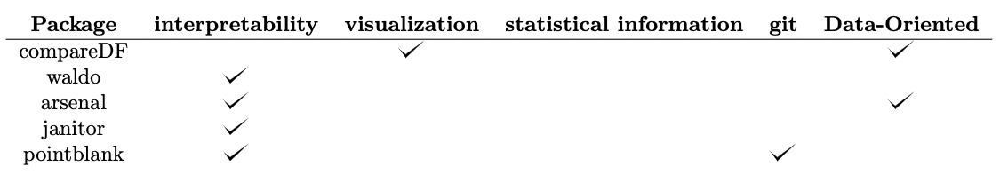
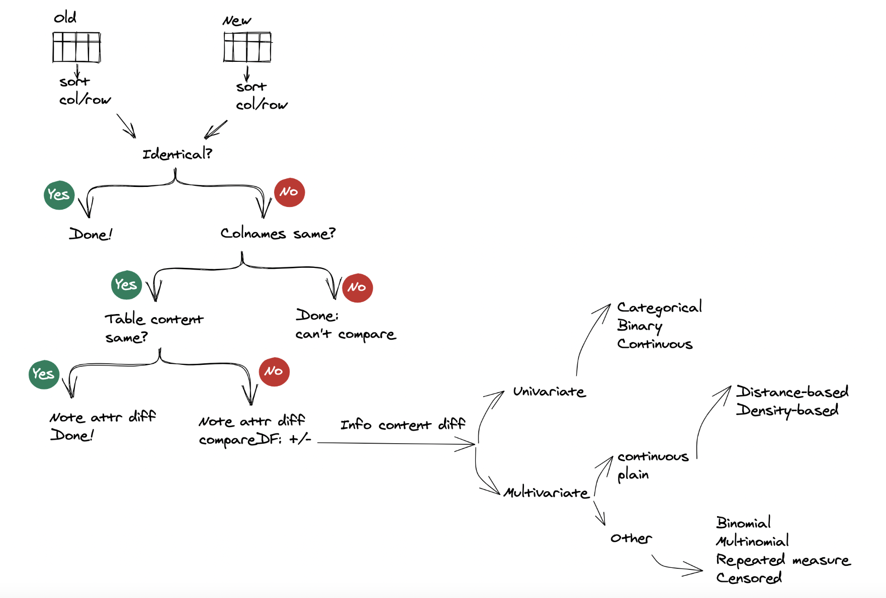

why_ddiff.RmdThe big-data opportunity is compelling in complex business
environments experiencing an explosion in the types and volumes of
available data. In the health-care and pharmaceutical industries, data
growth is generated from several sources, including the R&D process,
retailers, patients, caregivers and etc. Effectively utilizing these
data will help pharmaceutical companies better identify new potential
drug candidates and develop them into effective, approved and reimbursed
medicines more quickly. As a result, companies are hiring analytics
teams to serve business units, and even as data became more crucial to
decision-making and product roadmaps. However, the teams in charge of
data pipelines were treated more like plumbers and less like partners.
With better tooling, more diverse roles, and a clearer understanding of
data’s full potential, most forward-thinking teams are adopting a new
paradigm: data as a product(DaaP). In the DaaP model,
company data is viewed as a product, and the data team’s role is to
provide that data to the company in ways that facilitate good
decision-making and application building. Some important characteristics
of this model:
While each of these definitions has its own nuance, there are clearly some key takeaways: treating data as a product involves serving internal “customers” (data consumers), enabling decision-making and other key functions, and applying standards of rigor like SLAs. The key step is to apply a data as a product mindset is how you build, monitor, and measure data products. So when it comes to building pipelines and systems, use the same proven processes as you would with production software, like creating scope documents and breaking projects down into sprints. One of key sprints is the ability to track the difference of data product over time. In order to achieve this goal, we build a custom ‘ddiff’ function to tackle this problem.
Various packages have come along with utilities that could help
characterize or compare tabular data. Examples include, compareDF,
waldo, arsenal,
janitor, and
pointblank.
Comparisons provided by these packages, while get us closer to something
akin to a utility that could help us interpret changes as
diff does, they typically fall short. For example,
compareDF, as the package that most directly seeks to mimic
a git type diff functionality, rather than
aiming for what’s the spirit of diff (i.e. enabling the developer to
interpret differences) mimics text tracking functionality of
diff, which as mentioned is not suitable for data. As a
concrete example, from information perspective, reordering of columns
and rows does not change the information-content of a data table.
However, both git and compareDF treat row
re-arrangement as change by default (i.e. when you don’t specify a
grouping variable). Furthermore, all mentioned packages shy away from
statistical information tracking. Authors, may have thought about and
consciously decided to exclude that from the scope of their projects,
given complexities of general purpose tools for what could be akin to
anomaly detection. However, given the value of such approaches, even
limited application of statistical approaches (e.g. finding univariate
extreme values which is fairly robust), could move us closer to having
tools that provide actionable diff like functionality for
data. The illustration below shows a comparison to implementing a diff
functionality with packages dicussed above. 
The are two lines of components in the ddiff function workflow. The
first is Form or base content diff. The second is Information content
diff. Form or base content diff is mechanical and quite straight forward
to implement. In contrast, information content diff
ventures in the realm of unsupervised learning and hence more
complex.
